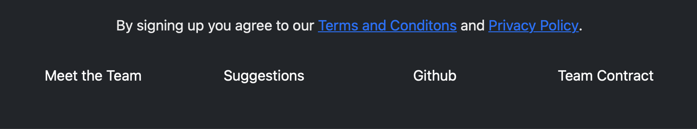

A Whole New World
07 May 2023My Personal Experience
The song “A Whole New World” just about sums up my feelings about taking my first software engineering class. The part of the song that I especially like is:
A whole new world (every turn a surprise)
With new horizons to pursue (every moment, red-letter)
I’ll chase them anywhere, there’s time to spare
Let me share this whole new world with you.
As someone who has never had an interest in software engineering this semester really opened my mind to a whole new world. I did not know what to expect and did not know that I would learn as much as I did in the class. In the beginning of the semester, the first thing we started to learn was Javascript and Workout of the Day (WOD), which is when the teacher gives you a programming problem and you have to solve it under a certain time or you get no credit. In general, I have a really hard time picking up a new programming language and I am a very slow coder so the first part of the semester was really challenging and I thought I wouldn’t pass the class. As the class progressed, I really started to flourish when we started to learn about HTML and CSS. I first learned about HTML in middle school and it has become my favorite coding language, so when we started learning about it in class that’s where my grades started to go up.
User Interface Frameworks
Going down the road of HTML and CSS was very familiar to me but when we got to User Interface (UI) Frameworks that’s when my personal growth started to flourish. UI Frameworks are similar to toolkits that software engineers use to create accessible and aesthetic software. The main UI Frameworks that we went over in class were Bootstrap, React, and Meteor. These were very to use and very easy to understand the logic behind it and I would absolutely use it in the future. Bootstrap, React, and Meteor all use HTML and CSS within their programs but they also provide an outline of how to run a project. Inside the program, there are different sections you can edit such as: HTML and CSS folders, user and system interfaces, test runs, components, layouts, and pages, public and server edits, and much more. With the way the program breaks down, you can easily apply this to another large project by breaking it down into smaller pieces and testing each little thing.


Ethics in Software Engineering
For our final project, my group and I created a website called “Flatmate Finder”. This website was supposed to help you find your perfect roommate match based on several criteria: do they smoke/drink, gender preferred, time they wake up/go to sleep, deal breakers, and information that they should know about you. Our team knew that this was a hypothetical program but we wanted to ensure that those who used our website would know that we valued their privacy with their information so we created “Terms and Conditions” and “Privacy Policy” links.

Ethics in social engineering is very important. Ethics in social engineering means using the techniques and programs within social engineering in a responsible and moral way to shape how people think and behave. If your website is taking user’s personal information, you have to make sure that their information is secure and that you don’t abuse their information. Even outside of social engineering, ethics can be applied to everyday lifestyle.
Last Thoughts
Now that the semester is coming to an end, I feel like taking this social engineering class really allowed me to grow as a person and as a computer scientist. I know the first part was hard but throughout the semester I really started to bloom and I think my teacher noticed that as well. Learning about Javascript, UI frameworks, and Ethics of social engineering allowed me to unlock new skills and fight new battles. I also learned how to use GitHub and learned about its importance in the CS world. I believe that this class was a game changer in my major and I am really happy that I had the opportunity to take this class.